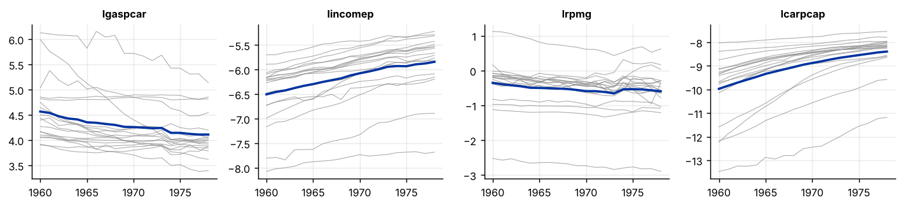

Step 1The question and the model
A long-run demand function says that fuel use per car depends on income, the real price of fuel and the stock of cars, and that deviations from that relation are temporary. Our question is: are gasoline use, income, price and the car stock cointegrated across 18 OECD countries, so that the long-run elasticities mean something?
If all variables are I(1) and \(u_{it}\) is stationary, the variables are cointegrated. Residual-based tests (Kao, Pedroni) test the null of no cointegration by checking whether \(\hat u_{it}\) has a unit root. The Westerlund (2007) test looks at the error-correction term \(\alpha_i\) in
and the null is \(\alpha_i=0\) for all \(i\).
| Symbol | Variable in the file | Definition |
|---|---|---|
| \(\ln g_{it}\) | lgaspcar |
log gasoline consumption per car |
| \(\ln y_{it}\) | lincomep |
log real per-capita income |
| \(\ln p_{it}\) | lrpmg |
log real gasoline price |
| \(\ln c_{it}\) | lcarpcap |
log stock of cars per capita |
Before you estimate anything
Panel cointegration tests need I(1) variables, enough time periods for the unit-root and ADF steps, and an answer to two questions: are the slopes the same in all countries, and are the countries cross-sectionally dependent? Here \(N=18\) and \(T=19\), which is short, so each test has low power and we expect them to disagree. Plan to report several tests and not to rely on one.
How to write it: model section
We test for cointegration between gasoline use per car, income, the real gasoline price and the car stock in 18 OECD countries for 1960–1978. We first establish the order of integration with panel unit-root tests that allow for cross-sectional dependence. We then apply the Kao residual test, a group-mean ADF test on country-specific cointegrating residuals in the spirit of Pedroni, and an error-correction test in the spirit of Westerlund. Critical values for the last two are simulated for N = 18 and T = 19. We repeat the tests after removing cross-sectional means.
Step 2Load the data and test for unit roots
import warnings; warnings.filterwarnings("ignore")
import numpy as np, pandas as pd
import matplotlib.pyplot as plt
import statsmodels.api as sm
from panel_tests import cips_test, fisher_adf_test, kao_test, cd_test
d = pd.read_csv("gasoline.csv").sort_values(["country", "year"]).reset_index(drop=True)
yv, xs = "lgaspcar", ["lincomep", "lrpmg", "lcarpcap"]
Wl = {v: d.pivot(index="year", columns="country", values=v) for v in [yv] + xs}
N, T = Wl[yv].shape[1], Wl[yv].shape[0]
print(f"{N} countries x {T} years ({d.year.min()}-{d.year.max()})")
rows = []
for v in [yv] + xs:
lev, dif = Wl[v], Wl[v].diff().dropna()
c1, c2 = cips_test(lev), cips_test(dif)
f1, f2 = fisher_adf_test(lev, maxlag=1), fisher_adf_test(dif, maxlag=1)
rows.append((v, c1["stat"], c1["p"], f1["Z_p"], c2["stat"], c2["p"], f2["Z_p"]))
print("Panel unit-root tests: CIPS (allows common shocks) and Fisher-ADF (assumes independent countries)")
print(pd.DataFrame(rows, columns=["variable", "CIPS level", "p", "Fisher p", "CIPS diff", "p ", "Fisher p "]).round(3).to_string(index=False))
fig, ax = plt.subplots(1, 4, figsize=(11, 2.6), sharex=True)
for a, v in zip(ax, [yv] + xs):
a.plot(Wl[v].index, Wl[v].values, color="#888", lw=.6, alpha=.7); a.plot(Wl[v].index, Wl[v].mean(1), color="#0033a0", lw=2); a.set_title(v, fontsize=9)
plt.tight_layout()18 countries x 19 years (1960-1978) Panel unit-root tests: CIPS (allows common shocks) and Fisher-ADF (assumes independent countries) variable CIPS level p Fisher p CIPS diff p Fisher p lgaspcar -1.378 0.796 0.000 -2.318 0.028 0.000 lincomep -1.997 0.167 0.806 -2.681 0.002 0.000 lrpmg -1.978 0.180 0.040 -2.908 0.000 0.000 lcarpcap -1.695 0.459 0.000 -2.384 0.019 0.006

How to read it
The panel has 18 countries and 19 years. The CIPS test, which allows for common shocks across countries, does not reject a unit root in the levels of any of the four variables (p between 0.17 and 0.80) and rejects it in the first differences (p between 0.000 and 0.028). By this test all four are I(1). The Fisher-ADF test, which assumes independent countries, gives a different answer for gasoline use (p < 0.001), the price (0.04) and the car stock (p < 0.001) in levels. We follow CIPS because the countries are clearly not independent (see the figure, where the series move together, and the CD test below). The variables are I(1), so a cointegration test is meaningful.
Step 3Residual-based tests: Kao and a Pedroni-type group test
def ols(y, X):
XtXi = np.linalg.inv(X.T @ X); b = XtXi @ X.T @ y; e = y - X @ b
return b, e, np.sqrt(np.diag(XtXi) * (e @ e) / (len(y) - X.shape[1]))
def adf_t(e, k=1):
de = np.diff(e); n = len(de)
cols = [e[k:-1]] + [de[k - j:n - j] for j in range(1, k + 1)]
b, _, se = ols(de[k:], np.column_stack(cols)); return b[0] / se[0]
def group_adf(Y, Xs, k=1): # country-by-country cointegrating regression, then ADF on the residual
ts = []
for i in range(Y.shape[1]):
X = np.column_stack([np.ones(len(Y))] + [x[:, i] for x in Xs])
ts.append(adf_t(ols(Y[:, i], X)[1], k))
return np.mean(ts), np.array(ts)
Y = Wl[yv].values; Xs = [Wl[v].values for v in xs]
kao = kao_test(d, "country", yv, xs)
g_stat, g_i = group_adf(Y, Xs)
print(f"Kao ADF test (common slopes, pooled residuals): t = {kao['stat']:.2f}, p = {kao['p']:.3f}")
print(f"Group-mean ADF on country residuals: {g_stat:.2f}")
print("Country ADF t-statistics:", dict(zip(Wl[yv].columns, g_i.round(1))))Kao ADF test (common slopes, pooled residuals): t = -1.69, p = 0.045
Group-mean ADF on country residuals: -2.97
Country ADF t-statistics: {'AUSTRIA': np.float64(-2.3), 'BELGIUM': np.float64(-3.3), 'CANADA': np.float64(-2.7), 'DENMARK': np.float64(-3.1), 'FRANCE': np.float64(-5.8), 'GERMANY': np.float64(-3.1), 'GREECE': np.float64(-4.2), 'IRELAND': np.float64(-2.0), 'ITALY': np.float64(-2.0), 'JAPAN': np.float64(-4.1), 'NETHERLA': np.float64(-3.5), 'NORWAY': np.float64(-2.4), 'SPAIN': np.float64(-2.3), 'SWEDEN': np.float64(-2.3), 'SWITZERL': np.float64(-3.4), 'TURKEY': np.float64(-2.4), 'U.K.': np.float64(-2.0), 'U.S.A.': np.float64(-2.5)}How to read it
The Kao test, which pools the residuals and imposes common slopes, gives t = −1.69 and rejects no cointegration at 5% (p = 0.045), only just. The group-mean ADF test on country-specific residuals gives −2.97, which is not below its simulated 5% critical value (−3.14). The country statistics vary a lot: three countries have a statistic below −4 (France −5.8, Greece −4.2, Japan −4.1) and several are around −2.0 to −2.5 (Ireland, Italy, the U.K.). Residual-based tests have low power with 19 observations, and they also need the cointegrating regression to be right for every country. The tests have different nulls on slopes, so we cannot say that one is correct. The next test uses a different principle.
Step 4The error-correction test of Westerlund
def westerlund_gt(Y, Xs, k=0):
out = []; T_ = len(Y)
for i in range(Y.shape[1]):
y = Y[:, i]; x = np.column_stack([a[:, i] for a in Xs]); dy = np.diff(y); dx = np.diff(x, axis=0)
idx = np.arange(k + 1, T_)
cols = [np.ones(len(idx)), y[idx - 1]] + [x[idx - 1, j] for j in range(x.shape[1])]
cols += [dy[idx - 1 - L] for L in range(1, k + 1)]
cols += [dx[idx - 1 - L, j] for L in range(0, k + 1) for j in range(x.shape[1])]
b, _, se = ols(dy[idx - 1], np.column_stack(cols)); out.append(b[1] / se[1])
return np.mean(out), np.array(out)
rng = np.random.default_rng(1)
def simulate(stat_fn, R=400, demean=False):
cs = (lambda A: A - A.mean(1, keepdims=True)) if demean else (lambda A: A)
sims = []
for _ in range(R): # null: no cointegration, independent random walks
Ys = np.cumsum(rng.standard_normal(Y.shape), 0); Xss = [np.cumsum(rng.standard_normal(Y.shape), 0) for _ in xs]
sims.append(stat_fn(cs(Ys), [cs(a) for a in Xss]))
return np.array(sims)
res = []
for lab, fn, k in [("Pedroni-type group ADF", lambda a, b: group_adf(a, b)[0], 1), ("Westerlund Gt, no lags", lambda a, b: westerlund_gt(a, b, 0)[0], 0), ("Westerlund Gt, 1 lag", lambda a, b: westerlund_gt(a, b, 1)[0], 1)]:
obs = fn(Y, Xs); sim = simulate(fn)
cv = np.percentile(sim, [5, 10])
res.append((lab, obs, cv[0], cv[1], ((sim <= obs).sum() + 1) / (len(sim) + 1)))
print(f"Simulated critical values and p-values (400 replications, N = {N}, T = {T}; p = (count + 1)/(R + 1))")
print(pd.DataFrame(res, columns=["test", "statistic", "5% cv", "10% cv", "p-value"]).round(3).to_string(index=False))Simulated critical values and p-values (400 replications, N = 18, T = 19; p = (count + 1)/(R + 1))
test statistic 5% cv 10% cv p-value
Pedroni-type group ADF -2.971 -3.135 -3.041 0.165
Westerlund Gt, no lags -2.995 -2.481 -2.362 0.002
Westerlund Gt, 1 lag -2.436 -2.390 -2.249 0.045How to read it
The Westerlund error-correction statistic is −3.00 without lags, far below the simulated 5% critical value of −2.48, and −2.44 with one lag, just below its critical value of −2.39 (p = 0.045). These tests reject no cointegration. The Pedroni-type group ADF statistic (−2.97) does not (p = 0.17). The error-correction tests use the information in the short-run dynamics and are usually more powerful than residual-based tests, which is why they reject here. With so few observations per country the lag choice matters: the evidence is weaker with one lag.
Step 5Cross-sectional dependence and the demeaned tests
# residuals of the country-by-country cointegrating regressions
E = np.column_stack([ols(Y[:, i], np.column_stack([np.ones(T)] + [a[:, i] for a in Xs]))[1] for i in range(N)])
ed = pd.DataFrame(E, columns=Wl[yv].columns)
dif_e = ed.diff().dropna()
cd_stat, cd_p, cd_rho = cd_test(dif_e)
print(f"Pesaran CD test on the first differences of the residuals: CD = {cd_stat:.2f}, p = {cd_p:.4f}; mean absolute correlation {cd_rho:.2f}")
print("Correlation of the differenced residuals with the cross-sectional mean of the differences, average over countries:",
round(float(np.mean([np.corrcoef(dif_e.iloc[:, i], dif_e.mean(1))[0, 1] for i in range(N)])), 2))
cs = lambda A: A - A.mean(1, keepdims=True)
res2 = []
for lab, fn in [("Pedroni-type group ADF", lambda a, b: group_adf(a, b)[0]), ("Westerlund Gt, no lags", lambda a, b: westerlund_gt(a, b, 0)[0])]:
obs = fn(cs(Y), [cs(a) for a in Xs]); sim = simulate(fn, demean=True)
res2.append((lab + ", cross-section demeaned", obs, np.percentile(sim, 5), ((sim <= obs).sum() + 1) / (len(sim) + 1)))
print("\nAfter removing the cross-sectional mean of every variable")
print(pd.DataFrame(res2, columns=["test", "statistic", "5% cv", "p-value"]).round(3).to_string(index=False))Pesaran CD test on the first differences of the residuals: CD = 5.68, p = 0.0000; mean absolute correlation 0.27
Correlation of the differenced residuals with the cross-sectional mean of the differences, average over countries: 0.36
After removing the cross-sectional mean of every variable
test statistic 5% cv p-value
Pedroni-type group ADF, cross-section demeaned -3.22 -3.148 0.025
Westerlund Gt, no lags, cross-section demeaned -3.30 -2.462 0.002How to read it
The countries are cross-sectionally dependent. The Pesaran CD test on the differenced residuals is 5.68 (p < 0.001) and the mean absolute correlation between countries is 0.27. First-generation tests assume independence and over-reject when it fails. After removing the cross-sectional mean of every variable (a simple way to remove common shocks), the group ADF statistic is −3.22, below its simulated 5% critical value (−3.15, p = 0.025), and the Westerlund statistic still rejects (−3.30). Five of the six tests we ran reject at 5%, and the plain group ADF does not. The evidence points to cointegration, but it is not unanimous, and the simulated critical values assume independent random walks, so they are approximate for demeaned data.
How to write it: results
All four variables are I(1) according to the CIPS test, which allows for cross-sectional dependence. The Kao test rejects no cointegration at the 5% level (t = −1.69, p = 0.045). A Pedroni-type group ADF test does not (−2.97, 5% critical value −3.14), but a Westerlund-type error-correction test does (−3.00 without lags and −2.44 with one lag, against simulated 5% critical values of −2.48 and −2.39). Because the countries are cross-sectionally dependent (CD = 5.68, p < 0.001), we repeated the tests after removing cross-sectional means and both reject (group ADF p = 0.025). We read the evidence as favouring a long-run relation, with the caveat that the panel is short (T = 19) and the tests do not agree on every specification.
Step 6Long-run elasticities: dynamic OLS
def dols(i, lead_lag=1):
y = Y[:, i]; x = np.column_stack([a[:, i] for a in Xs]); dx = np.diff(x, axis=0)
idx = np.arange(lead_lag + 1, T - lead_lag)
cols = [np.ones(len(idx))] + [x[idx, j] for j in range(3)]
cols += [dx[idx - 1 + s, j] for s in range(-lead_lag + 1, lead_lag + 1) for j in range(3)]
b, _, se = ols(y[idx], np.column_stack(cols)); return b[1:4]
B = np.array([dols(i) for i in range(N)])
mg = B.mean(0); mg_se = B.std(0, ddof=1) / np.sqrt(N)
fe = sm.OLS(d[yv] - d.groupby("country")[yv].transform("mean"),
d[xs] - d.groupby("country")[xs].transform("mean")).fit(cov_type="cluster", cov_kwds={"groups": pd.factorize(d.country)[0]})
tab = pd.DataFrame({"fixed effects (levels)": fe.params, "FE cluster s.e.": fe.bse, "DOLS mean group": mg, "MG s.e.": mg_se, "MG median": np.median(B, 0)}, index=xs)
print(tab.round(3).to_string())
print("\nShare of countries with the expected sign (income +, price -, cars -):", (B[:, 0] > 0).mean().round(2), (B[:, 1] < 0).mean().round(2), (B[:, 2] < 0).mean().round(2))fixed effects (levels) FE cluster s.e. DOLS mean group MG s.e. MG median lincomep 0.662 0.158 0.360 0.104 0.327 lrpmg -0.322 0.126 -0.210 0.064 -0.172 lcarpcap -0.640 0.100 -0.389 0.064 -0.384 Share of countries with the expected sign (income +, price -, cars -): 0.89 0.89 0.94
How to read it
The fixed-effects regression in levels gives elasticities of 0.66 for income, −0.32 for the price and −0.64 for the car stock. Dynamic OLS, which adds a lead and a lag of the differenced regressors to correct for endogeneity, gives smaller numbers in the mean group: 0.36 (s.e. 0.10), −0.21 (0.06) and −0.39 (0.06). The medians (0.33, −0.17, −0.38) are close to the means, so a few countries do not drive them. Between 89% and 94% of the countries have the expected sign. The difference between the pooled static and the DOLS estimates is large, and it is a reason to trust DOLS more, although with 15 usable years per country and ten coefficients each country estimate is imprecise, so use the mean-group standard errors and not the country ones.
Step 7What to report in the paper
| Item | What to show |
|---|---|
| Orders of integration | panel unit-root tests that allow for cross-sectional dependence (CIPS), and the Fisher-ADF as a comparison |
| Tests | at least two cointegration tests with different nulls and assumptions (Kao, Pedroni, Westerlund) |
| Critical values | how they were obtained, especially in a short panel |
| Dependence | the CD test and the results after removing cross-sectional means |
| Estimates | a long-run estimator robust to endogeneity (DOLS or FMOLS) with the mean-group and pooled versions |
| Honesty | state that the tests disagree and what that means, instead of picking the one that rejects |
Common mistakes
- Testing for cointegration before checking for I(1). The tests assume integrated variables. A stationary variable in the system can produce a rejection that has nothing to do with a long-run relation.
- Using one test. The tests have different nulls, different slope assumptions and different power. Show several.
- Ignoring cross-sectional dependence. Common shocks make the first-generation tests over-reject.
- Using asymptotic critical values in a short panel. With T below about 30, use simulated or bootstrap values.
- Taking the static levels regression as the long-run effect. Static regressions are biased in finite samples. Use DOLS or FMOLS.
- Treating a rejection as proof of a causal long-run effect. Cointegration shows a stable relation, not its direction.